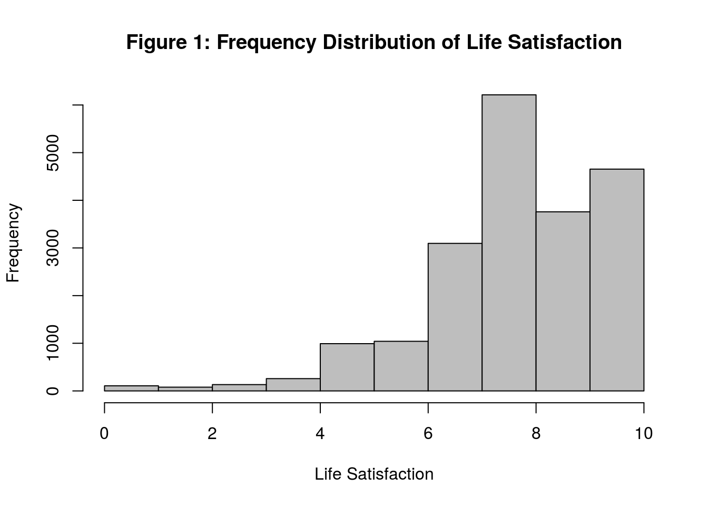
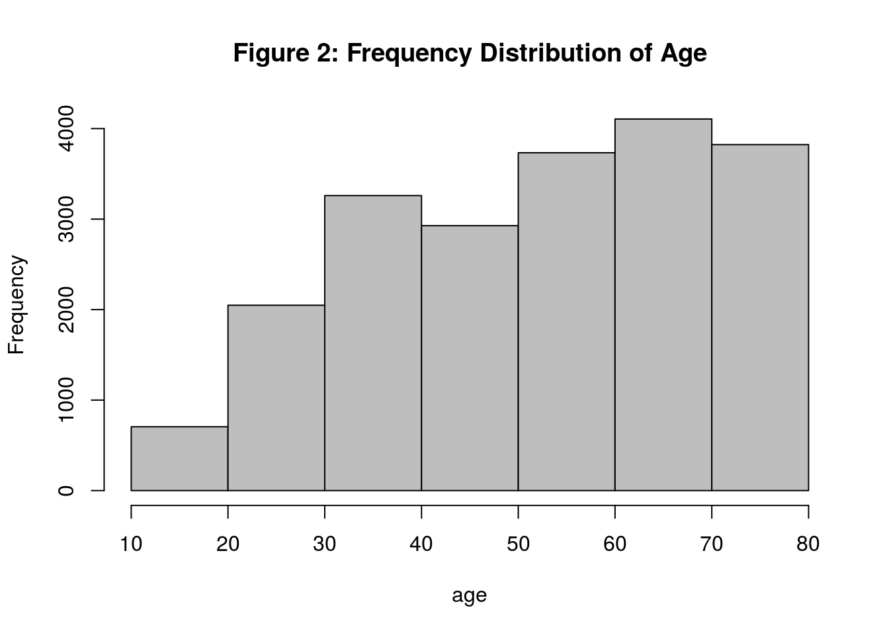
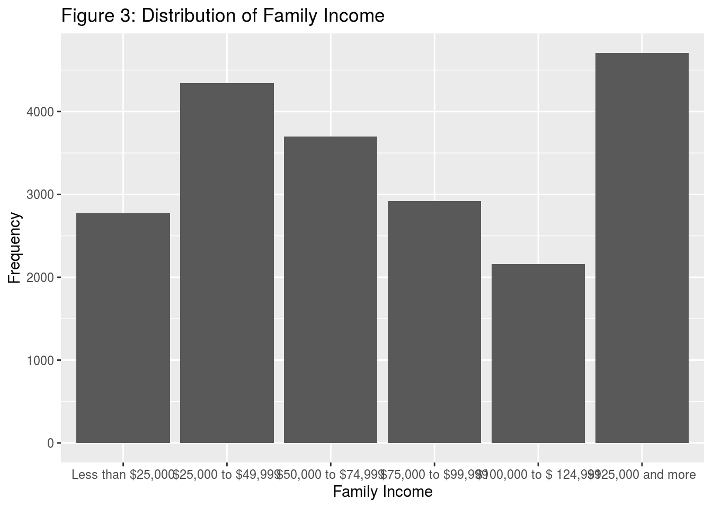
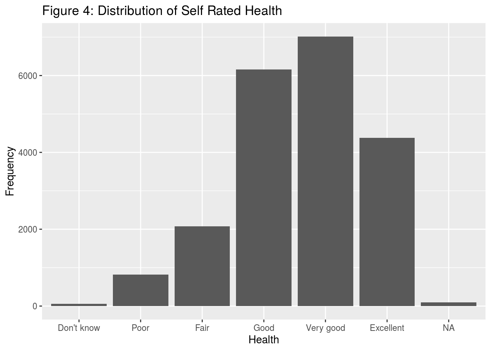
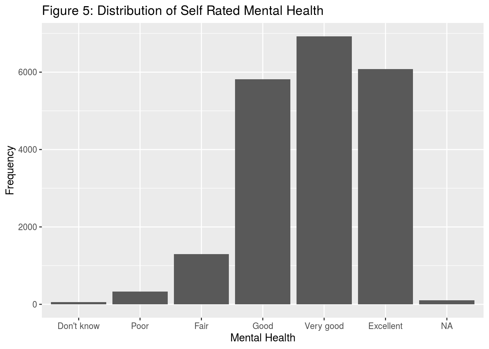

Life satisfaction is a necessary term associated with people. Previous studies found that many factors can influence life satisfaction, including age and income (Baird, Lucas, & Donnellan, 2010; Frijters, Haisken-DeNew & Shields, 2004). However, few studies have focused on Canada and tested Canadians’ life satisfaction. This report aims to test whether factors influenced life satisfaction from previous research can be applied to Canada and test some other factors that may influence Canadians’ life satisfaction. The data chosen comes from the 2017 General Social Survey (GSS), and we built a multiple linear regression model to predict life satisfaction. The model shows that Canadians’ life satisfaction is associated with age, gender, family income, numbers of children, numbers of marriage, self-rated health, self-rated mental health, and living with a partner. More specifically, contrary to Baird et al. (2010), we found that increasing age is associated with higher life satisfaction. On the other hand, we also found that increasing family income is associated with higher life satisfaction, which corresponds to Frijters et al. (2004). This shows that factors from previous studies could also be used to predict Canadians’ life satisfaction, but maybe in different directions.
Life satisfaction is an extensive term associated with everyone in the world. It is the evaluation of people’s life (Ackerman, 2020). More specifically, it measures whether people feel satisfied with the lives they experienced. There are a variety of studies that tried to reveal the factors that influenced life satisfaction. For example, Baird, Lucas, and Donnellan (2010) found that age was associated with life satisfaction; life satisfaction decreased when people passed their 70s. Another study showed that people’s life satisfaction increased as the household income increased (Frijters, Haisken-DeNew & Shields, 2004).
However, even though many studies have focused on life satisfaction, few studies have focused on Canada and tested Canadians’ life satisfaction. To fill the gap, this report will analyze factors associated with Canadians’ life satisfaction using the data from the 2017 Canadian General Social Survey (GSS). Based on the comprehensive information from GSS, this report aims to test whether the factors influencing life satisfaction from previous studies could be applied to Canada and explore some other factors linked with Canadians’ life satisfaction.
The data used in the report comes from the 2017 Canadian General Social Survey (GSS). GSS is a fundamental social survey in Canada. It collects Canadians’ information on a diverse range of scale, including age, sex, income, and health condition (Government of Canada, 2017). More importantly, the 2017 GSS includes the variable “feelings life,” which is perfectly suitable for the report’s research questions. Because it consists of this comprehensive information about Canadians that allows analyzing the relationship between life satisfaction and other factors, we chose GSS as the primary data to study in the report. There is a summary of the 2017 GSS below.
The target population of the 2017 Canadian GSS is “all non-institutionalized persons 15 years of age or older, living in the 10 provinces of Canada (Government of Canada, 2019).” The total Canadian population in 2017 was 36,545,295, the population of ages between 0 to 14 years was 5,912,118 (Government of Canada, 2020), so the population of people 15 years of age or older was 30,633,177. Thus, we can assume that the target population of the 2017 Canadian GSS is 30,633,177. Besides, the 2017 GSS contains 20,602 observations, which means the sample size of the data is 20,602.
Even though the GSS is suitable for the research questions, it has some drawbacks. First, the GSS collected data using Computer Assisted Telephone Interviewing (CATI), in which staff call the selected participants and collect information via phones (Government of Canada, 2017). This way can help save money and energy, but it has some limitations. For example, researchers could only approach people who have phones. These people are usually associated with higher socioeconomic status and better education. Thus, not everyone in the population has the same probability of getting into the study, which may potentially make the result biased. Second, the GSS is usually collected over 6 to 12 months (Government of Canada, 2017). People may experience different things during this long period, making their answers to the survey limited to timeliness. For example, people may give different answers about their mental health in a different time.
To explore factors influncing Canadians’ life satisfaction, we built a multiple linear regression model. Multiple linear regression model can help to identify the influences of multiple variables on a specific prediction variable. For example, if we want to use a multiple linear regression model to estimate this: \[y_{i} = \beta_{0} + \beta_{1}x_{1i} + \beta_{2}x_{2i} + \cdots + \beta_{k}x_{ki} + \epsilon_{i} \]
The multiple linear regression model should be: \[\hat{y} = b_{0} + b{1}x_{1} + b{2}x_{2} + \cdots + b_{k}x_{k}\]
Here, we use \(b_{0} + b{1}x_{1} + b{2}x_{2} + \cdots + b_{k}x_{k}\) to predict \(y_{i}\), so we use \(\hat{y}\) to represent the prediction of \(y_{i}\). Besides, \(b_{0}\) is the intercept of the model, while \(b_{1}, b_{2}, \dots,b_{k}\) refer to slopes corresponding to certain variables.
In this case, we used variables including age, gender, family incomes, number of children, number of marriages, self rated health, self rated mental health, and whether living with a parter, to predict people’s life satisfaction. Our model looks like this:\[\hat{Life Satisfaction} = b_{0} + b_{1}{Age} + b_{2}{Gender} + b_{3}{Family Income} + \] \[b_{4}{Children Numbers} + b_{5}{Marriage Numbers} + b_{6}{Self Rated Health} +\] \[b_{7}{Self Rated Mental Health} + b_{8}{Living with a Partner} \]
Here, the intercept \(b_{0}\) means that if all variables are 0, then life satisfaction is expected to be \(b_{0}\). The slope, for example, \(b_{1}\), means that if all other variables are 0, when age increases for one unit, life satisfaction is expected to increase \(b_{1}\).
In addition, some variables in the model are categorical variables, which means observations of these variables fall into different categories, and these categories are not continuous like numbers. For example, there are 6 levels of Family Income, which are “Less than $25,000,” “$25,000 to $49,999,” “$50,000 to $74,999,” “$75,000 to $99,999 ,” “$100,000 to $124,999,” and “$125,000 and more.” Similarly, variables of Health and Mental Health are also categorical variables. These two variables both have 6 levels, which are “Don’t Know,” “Poor,” “Fair,” “Good,” “Very Good,” and “Excellent.” Participants will choose the category that best describes them. Some other categorical variables in the model include Gender, and Live with Partner. These two variables only include 2 different categories, which are “Male” or “Female,” and “Yes” or “No,” correspondingly.
In this report, we used the language R to build the multiple regression model. Also, we regularized the model using the finite population correction factor. The data were collected without replacement, which means that when one person filled the survey, they would no longer be in the pool of selection. In this case, the standard error of each variable will be large and make the result of the model not valid (Glen, 2018). Thus, we included the finite population correction factor in the model, preventing the model from suffering the effect of sampling without replacement.
To begin with, there are some figures describing the distribution of some major variables in the model independently.

Figure 1 shows the frequency distribution of Canadians’ life satisfaction. This is a negative skewed distribution, where most people had high rates about their life satisfaction while a few people had low rate.

Figure 2 demonstrates the distribution of age in the 2017 GSS. It is clear that most people who did this survey were over 50 years old. Also, even though the target population of the survey is people over 15 years old, only a few people between 10 to 20 years old participated in the survey.

Figure 3 shows the distribution of family income level in the sample. Most people’ family income were in between $25,000 and $75,000. However, there are still a lot people whose family income was greater than $125,000.

Figure 4 illustrates the distribution of self rated health. Most people rated their health as good and very good, while a few people rated their health as poor.

Figure 5 shows the distribution of self rated mental health. Most people rated their mental health as good, very good, and excellent. A few people rated their mental health as poor and fair.
The next part is the summary of the linear regression model:
##
## Call:
## svyglm(formula = feelings_life ~ is_male + age + income_family +
## total_children + number_marriages + self_rated_health + self_rated_mental_health +
## lives_with_partner, design = GSS.design)
##
## Survey design:
## svydesign(id = ~1, data = gss, fpc = fpc.srs)
##
## Coefficients:
## Estimate Std. Error t value Pr(>|t|)
## (Intercept) 7.1993831 0.3919708 18.367 < 2e-16 ***
## is_male -0.1023256 0.0197125 -5.191 2.11e-07 ***
## age 0.0058462 0.0006901 8.471 < 2e-16 ***
## income_family$125,000 and more 0.0183002 0.0309469 0.591 0.554299
## income_family$25,000 to $49,999 -0.2632558 0.0358750 -7.338 2.25e-13 ***
## income_family$50,000 to $74,999 -0.1424260 0.0349555 -4.074 4.63e-05 ***
## income_family$75,000 to $99,999 -0.1064959 0.0352446 -3.022 0.002517 **
## income_familyLess than $25,000 -0.4004592 0.0428345 -9.349 < 2e-16 ***
## total_children 0.0669408 0.0084000 7.969 1.68e-15 ***
## number_marriages 0.0724040 0.0213647 3.389 0.000703 ***
## self_rated_healthExcellent 0.8520359 0.2291882 3.718 0.000202 ***
## self_rated_healthFair 0.0800216 0.2314447 0.346 0.729535
## self_rated_healthGood 0.4432535 0.2285272 1.940 0.052441 .
## self_rated_healthPoor -0.7601110 0.2443232 -3.111 0.001867 **
## self_rated_healthVery good 0.6554666 0.2285165 2.868 0.004130 **
## self_rated_mental_healthExcellent 0.6794521 0.3259342 2.085 0.037115 *
## self_rated_mental_healthFair -1.2892707 0.3300810 -3.906 9.42e-05 ***
## self_rated_mental_healthGood -0.2612243 0.3259122 -0.802 0.422842
## self_rated_mental_healthPoor -2.5751791 0.3566478 -7.221 5.36e-13 ***
## self_rated_mental_healthVery good 0.2240933 0.3257603 0.688 0.491518
## lives_with_partnerYes 0.0905261 0.0317869 2.848 0.004405 **
## ---
## Signif. codes: 0 '***' 0.001 '**' 0.01 '*' 0.05 '.' 0.1 ' ' 1
##
## (Dispersion parameter for gaussian family taken to be 1.9366)
##
## Number of Fisher Scoring iterations: 2Based on the summary, we can build the multiple linear regression model to predict Canadians’ life satisfaction: \[\hat{Life Satisfaction} = 7.200 + 0.006{Age} - 0.102{Male} + 0.018{<$125,000 and more>} \] \[-0.263{<$25,000 to $49,999>} - 0.142{<$50,000 to $74,999>} \] \[-0.106{<$75,000 to $99,999>} -0.400{<Less than $25,000>} + 0.067{ChildrenNumbers} \] \[+ 0.072{MarriageNumbers} +0.852{ExcellentHealth} + 0.655{VeryGood Health} \] \[ +0.443{Good Health} +0.080{FairHealt} -0.760{PoorHealth} \] \[+ 0.679{ExcellentMental} + 0.224{VeryGoodMental} - 0.261{GoodMental} \] \[ - 1.289{FairMental}-2.575{PoorMental} + 0.091{Live With Partner} \]
By using the model, we can predict a person’s life satisfaction based on their information. For example, if a 40-year-old male has 2 children, 1 marriage, lives with his partner, and rates himself as “good health” and “poor mental health,” and the family income is in between $75,000 and $99,999, then the person’s expected life satisfaction based on the model is: \[\hat{Life Satisfaction} = 7.200 + 0.006 * 40 - 0.102 * 1 -0.106 * 1 \] \[+ 0.067 * 2 + 0.072 * 1 +0.443 * 1 -2.575 * 1 + 0.091 * 1 \] So the expected life satisfaction for the person is 4.1582.
This report analyzes the 2017 GSS data to reveal the relationships between Canadians’ life satisfaction and some other variables such as age, gender, family income, number of children, number of marriages, self-rated health and mental health, and company with a partner. This report built a multiple linear regression model to predict Canadians’ life satisfaction using these variables. In this multiple linear regression model, we found that almost all these variables are significant, which means they strongly correlated with life satisfaction. Thus, we can use this model and these variables to predict Canadians’ life satisfaction. Some categories of these variables did not show this significant relationship, such as “Fair” in the variable Health, and “Good” in the variable Mental Health. However, we cannot merely drop these insignificant categories because we need to see the categorical variable as a whole. Thus, we chose to keep all of these variables in the model, as most categories of each categorical variable are significant in the model.
When looking at the slope of each variable in the model, most of them make sense in real life senarios. For example, when family income is above $125,000, the slope is positive. However, when family income is below $125,000, the slope is negative. Also, when family income decreases, the slope also decreases, leading to a lower life satisfaction score. This corresponds to Frijters, Haisken-DeNew, and Shields (2004), indicating that in Canada, higher family income is also associated with higher life satisfaction. However, the slope of age is positive, which means that when age increases, the life satisfaction will also increase. This contradicts Baird, Lucas, and Donnellan (2010). One possible reason why this contradiction happens is that we focused on the age as a whole and did not separate the data based on age 70s, so it is less likely to see a decreasing trend of life satisfaction when people pass 70s. Thus, factors from previous studies could also be applied to Canadians’ life satisfaction, but they may be associated with Canadians’ life satisfaction in different directions.
For the variables health and mental health, it is understandable that better health and mental health conditions have positive slopes, so they are associated with higher life satisfaction. On the other hand, worse health and mental health conditions have negative slopes, which means they are associated with lower life satisfaction. More specifically, poor mental health will lower life satisfaction much more than poor health condition. In the model, the slope of poor health is -0.760, which means poor health will decrease life satisfaction score by 0.760. However, the slope of poor mental health is -2.575, which means poor mental health will drop life satisfaction by 2.575. This suggests that mental health conditions play a much more critical role in determining people’s life satisfaction than we think before.
Both living with a partner and numbers of children have positive slopes, meaning that they are associated with better life satisfaction. One plausible explanation is that humans are social animals. When accompanied by a family member in their lives, people tend to feel more positive and be more satisfied with life. For the variable gender, we found that males are associated with lower life satisfaction. Besides, the slope of numbers of marriages is positive, suggesting that people with more marriages tend to have higher life satisfaction scores.
One weakness in the report is that the data were collected through Computer Assisted Telephone Interviewing (CATI), which means only the people who have phones can be approached (Government of Canada, 2017). People without cellphones cannot be included in the sample, and these people are usually associated with lower socioeconomic status and education. Thus, the sample may be biased because it may underestimate people from lower socioeconomic status. Also, CATI’s whole process lasts about 40 to 45 minutes (Government of Canada, 2017). This long process may lower the participation rate in young people because they may not have so much spare time in their life. On the other hand, this process may increase retired people’s participation rate, as they have more spare time. We can clearly see this pattern from Figure 2, in which most data were collected from people over 50 years old. This may also lead to biased results because our data may not accurately represent the target population.
Another thing we need to concern about is the overconfidence effect. The overconfidence effect states that people tend to feel overconfident about their abilities and overestimate their performance (Gerry et al., 2002). In the 2017 GSS, people’s health and mental health conditions were collected via their self-reports, which may lead to the overconfidence effect. People may be overly confident about their health and mental health. In Figure 4 and 5, most people’s health and mental health conditions fall into “Good,” “Very good,” and “Excellent” categories, with a few people chose “Poor.” However, based on the Mental Health Commission of Canada (2013), approximately 1 in 5 people in Canada will experience some mental illness. Thus, people tended to overestimate their health and mental health conditions in the 2017 GSS, leading to some biased results.
The social desirability bias may also influence people’s answers. It is a type of bias that people tend to answer questions that are favourable by society and others (Ivar, 2013). In Figure 1, most people rated their life satisfaction between 7 to 10, which may be due to the effect of the social desirability bias that people may rate higher scores for their life satisfaction. This may also make the data biased, leading to invalid results.
In this report, we built a multiple linear regression model to predict Canadians’ life satisfaction. We conclude from the model that Canadians’ life satisfaction is associated with age, gender, family income, numbers of children, numbers of marriage, self-rated health, self-rated mental health, and living with a partner.
However, due to the limitations of the dataset we chose, there might be some potential bias in the result. Future studies are required to solve these limitations to see whether the outcomes change without the data’s potential bias. For example, to make the age distribution in the sample representative of the population, future researchers can use stratified random sampling. In this method, people are randomly selected, and the age distribution chosen should be the same as the population age distribution. Also, to avoid the overconfidence effect, future research can collect objective judgments about people’s health and mental health conditions, such as medical records.
Ackerman, C. E. (2020, September 1). Life satisfaction theory and 4 contributing factors [Blog post]. Retrieved from https://positivepsychology.com/life-satisfaction/
Baird, B. M., Lucas, R. E., & Donnellan, M. B. (2010). Life satisfaction across the lifespan: Findings from two nationally representative panel studies. Social indicators research, 99(2), 183-203.
Frijters, P., Haisken-DeNew, J. P., & Shields, M. A. (2004). Money does matter! Evidence from increasing real income and life satisfaction in East Germany following reunification. American Economic Review, 94(3), 730-740.
Glen, S. (2018, February 18). Finite Population Correction Factor FPC: Formula, Examples. Statistics How To. Retrieved October 15, 2020, from https://www.statisticshowto.com/finite-population-correction-factor/.
Government of Canada, S. C. General Social Survey - Family (GSS). (Modified on 2019, February 6). https://www23.statcan.gc.ca/imdb/p2SV.pl?Function=getSurvey.
Government of Canada, S. C. Population estimates on July 1st, by age and sex. (Modified on 2020, October 14). https://www150.statcan.gc.ca/t1/tbl1/en/tv.action?pid=1710000501.
Government of Canada, S. C. (2017, February 27). The General Social Survey: An Overview. Government of Canada, Statistics Canada. https://www150.statcan.gc.ca/n1/pub/89f0115x/89f0115x2013001-eng.htm.
Kabacoff, R. (2017). Bar Plots. Retrieved October 15, 2020, from https://www.statmethods.net/graphs/bar.html
Kassambara, A. (2018, October 19). Rename Data Frame Columns in R. Retrieved October 15, 2020, from https://www.datanovia.com/en/lessons/rename-data-frame-columns-in-r/
Krumpal, I. (2013). Determinants of social desirability bias in sensitive surveys: a literature review. Quality & Quantity, 47(4), 2025-2047.
Mental Health Commission of Canada (2013). Making the case for investing in mental health in Canada.
Pallier, G., Wilkinson, R., Danthiir, V., Kleitman, S., Knezevic, G., Stankov, L., & Roberts, R. D. (2002). The role of individual differences in the accuracy of confidence judgments. The Journal of general psychology, 129(3), 257-299.
Sauer， S. (2017, June 05). Sorting the x-axis in bargraphs using ggplot2. Retrieved October 15, 2020, from https://sebastiansauer.github.io/ordering-bars/
Willems, K. (2019). How to Make a Histogram with Basic R. Retrieved October 15, 2020, from https://www.datacamp.com/community/tutorials/make-histogram-basic-r